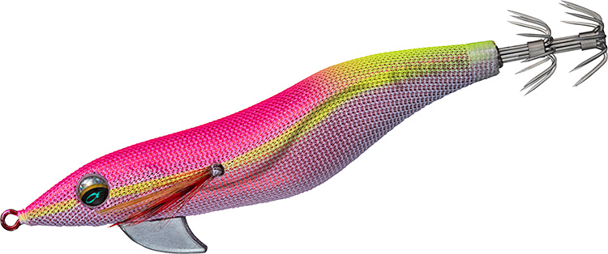
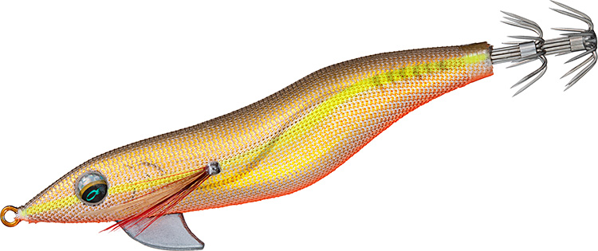
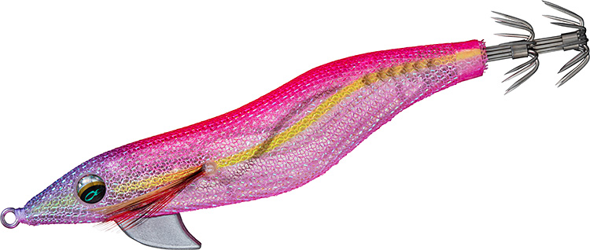
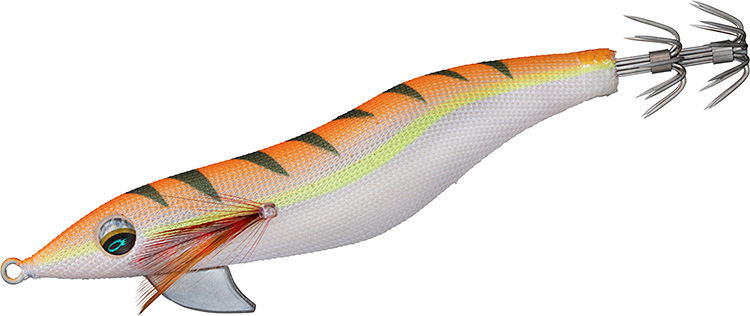
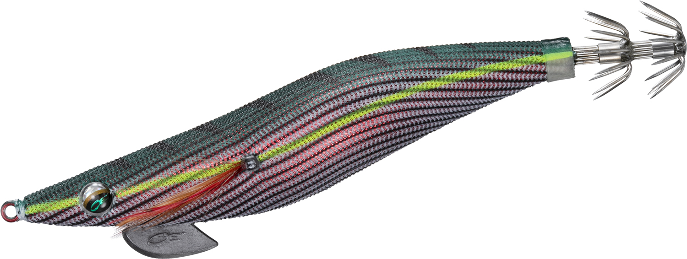
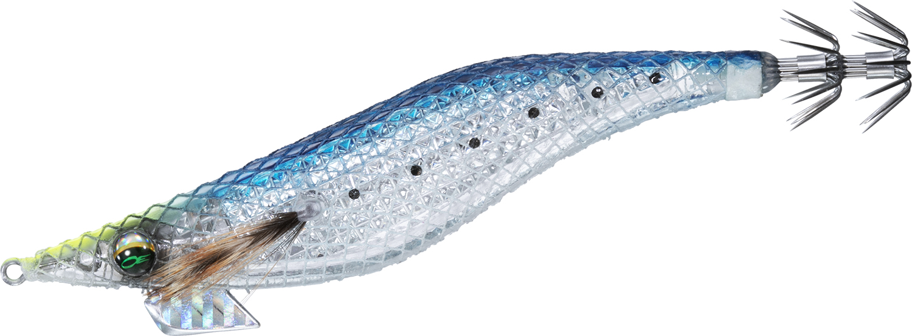

エメラルダス フォールLC ラトル
（EMERALDAS FALL LC RATTLE）
エメラルダス フォールLC ラトルは、安定したフォール姿勢で定評のある「エメラルダス フォール」に、磁着式重心移動を積んだダイワのエギです。
「ぶっ飛び＆安定フォール」が売りで、遠投したあとは磁石がウエイトを固定して、安定したフォール姿勢をキープします。

画像出典:ダイワ公式HP
スペック
- メーカー
- DAIWA（ダイワ）
- タイプ
- 磁着式重心移動エギ（ラトル入り・ノーマルシンキング）
- サイズ・重さ
- 2.0号 6.5g／2.5号 10g／3.0号 14.5g／3.5号 21.5g
- 沈下速度
- 6.5秒/m（2.0号）／5.5秒/m（2.5号）／4.0秒/m（3.0号）／3.5秒/m（3.5号）
- カンナ
- 日本製素材のスーパーシャープ段差カンナ
- ターゲット
- アオリイカ
- 価格
- 1,450〜1,500円（税抜）
▼今すぐチェック

エメラルダス フォールLC ラトルの特徴
磁着式重心移動の「ぶっ飛び＆安定フォール」
-
磁着式重心移動
飛距離が大きく向上。着水してフォールに入ると、磁石がウエイトを固定するので、安定したフォール姿勢を保つ。
-
ボリュームのあるボディ
水中のフォール姿勢が安定して、スレたイカに警戒心を与えにくい。
-
ラトル入り
どのサイズもラトルタイプで、シャクリの時は音でも広くアピールする。
エメラルダス フォールLC ラトルの使い方
基本は、シャクリのあとのフォールを長めにとって、安定した姿勢でイカに抱かせることです。シャクるとラトルが鳴るので、まず音で寄せて、フォールで食わせるイメージで使いましょう。
沈下速度はエメラルダス フォールゆずりの、ややスロー気味の設定です。
エメラルダス フォールLC ラトルの得意な状況
プレッシャーが高く、イカがエギを見慣れている堤防や、少し濁りがある時に出番です。
遠投しても安定したフォール姿勢でじっくり見せられるのが強み。スレたイカもよく釣れる、ダイワの重心移動エギの定番です。
ワンポイント
フォール中のアタリを取るために、シャクったあとはラインを軽く張った状態でフォールさせ、ラインの動きを目で追うようにしましょう。安定したフォールなので、小さなアタリも出やすくなります。
サイズの使い分け
| サイズ | 重さ | 沈下速度 | こんな |
|---|---|---|---|
| 2.0号 | 6.5g | 6.5秒/ |
小さい |
| 2.5号 | 10g | 5.5秒/ |
秋の |
| 3.0号 | 14.5g | 4.0秒/ |
秋の |
| 3.5号 | 21.5g | 3.5秒/ |
春の |
スペックはダイワ公式HPの記載より。スローシンキングの「typeS」もあります。
人気カラー
エメラルダス フォールLC ラトルの人気カラーを紹介します。
 赤－ピンクイエローアジ
赤－ピンクイエローアジ
赤テープに目立つピンク。まずめや濁りに。

金－キン＆オレンジアジ金テープのフラッシング。朝夕に。

ケイムラ－パープルピンクアジ紫外線で光るケイムラ。曇りの日に。

夜光－オレンジ杉夜光で、夜や暗い時間に。
※画像は3.5号。
画像出典:ダイワ公式HP
▼今すぐチェック
エメラルダス フォールLC ラトルに似ているルアー
-

エメラルダス ダートLC ダイワ 詳細はこちら＞同じ磁着式重心移動のダート系エギ。
-

エメラルダス シャインLC レーザーインパクト ダイワ 詳細はこちら＞強い光でアピールする磁着式重心移動エギ。
-
 エギスタBTB
釣研
詳細はこちら＞
エギスタBTB
釣研
詳細はこちら＞
ファットボディの安定フォールの重心移動エギ。